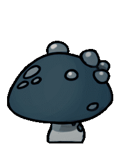
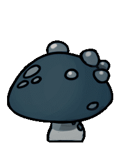

On the surface of the once great kingdom's ruins, hidden away in a valley in the midst of the wastelands lies a quiet little town named Dirtmouth. In its time, a bustling hub of travelers coming to explore the kingdom below, but ever since the fall of Hallownest, it stays a quiet, less populated town. Despite this, it still provides a great place to rest and stock up on supplies before descending into the ruins underneath.

.png)
.png)
.png)
.png)
Just beneath Dirtmouth lies the Forgotten Crossroads, a network of tunnels that connect many different areas of Hallownest together. It's because of this that in the kingdom's glory days, bugs from all over would pass through the winding paths. Locals, travelers, and pilgrims alike would follow these roads to get to their destinations. Nowadays, ever since the kingdom's fall, it is a quiet, empty maze of dead, cold rock, only inhabited by wild bugs and the occasional infected husk of a former citizen of Hallownest. You can see some of the creatures that inhabit this place neatly listed on the right! Try hovering the mouse cursor over them, see what happens...


CRAWLID

TIKTIK

VENGEFLY

GRUZZER


ASPID
HUNTER
.gif)

HUSK GUARD
To the west of the Forgotten Crossroads are the lush and lively caverns of Greenpath. Teaming with plants and vegetation, the whole place really is a sight to behold. Just be careful not to slip and fall into the acidic water that fills the place! This region was once inhabited by the mosskin, a tribe of plant-like bugs who thrived in the dense greenery, but they've since fallen to the plague and now mindlessly attack anyone who gets too close. With so many plants everywhere, it can be hard to spot some of the creatures of this place! Why don't you give it a shot? Move the cursor around and see what pops out of the foliage... There are 4 creatures already visible in this scene, and 3 creatures are hidden!


Beneath Greenpath is the strange, foggy canyon known as, well, Fog Canyon. With all the bubbles floating around and the overwhelming humidity of the place, it gives a hunter the sensation that they are underwater, but not really. Very trippy. Enough to make someone lose their senses down there. By far the strangest part about these caverns are the oomas and uomas just floating around in the air (ooma - left, uoma - right). They're quite painful to touch, and even deadlier to kill. You see, the oomas have this extremely explosive core at the center of their see-through, gelatinous bodies, that will violently explode if the ooma is killed (I once ate an ooma straight out of the air in one chomp, causing it to explode in my mouth. It was NOT WORTH IT!!!) I don't like these caverns, with their strange, nature-defying, almost artificial looking creatures, and the weird sensation of feeling like you're underwater even though you aren't. Let's move on, QUICKLY!
Now, we are in the final area that the Pilgrim's Way will take you through: the Fungal Wastes! Once home to a peaceful tribe of sentient mushrooms, the area is completely covered with non-sentient mushrooms at every angle! The place also STINKS!!! All those spores floating in the air cause a noxious odour that can be smelt from an extreme distance. Not only that, but the once peaceful mushroom tribe is now aggressive due to the infection that's been spreading everywhere. That blasted plague turns ANY creature violent! Try moving the cursor around and you might encounter some... I believe there are 2 hiding here.


 



Finally. After that long journey through rocky roads, verdant wilds, and fungal groves, you've made it to the city at the kingdom's center. Hallownest's heart lays open before you. What do you seek to achieve in such a place? Wealth? Glory? Enlightenment? It doesn't matter, young hunter. You have the whole world to explore from here. What will you do on your journey through Hallownest? That decision is up to you. Good luck... hunter. I wish you the best.